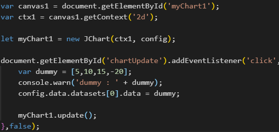
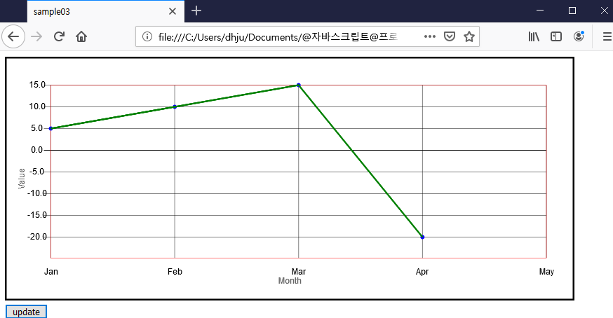

Usage - Single Chart
# 차트 구동
에 원하는 데이터를 Array로 넣어 JChart.update(); 를 호출하여 차트를 그린다..

canvas, ctx, JChart를 각각 초기화 하고 config 설정을 다르게 하여 표출한 모습(아래)

TIP.
지속적으로 변경되는 데이터를 표현하고자 할 경우, Array.prototype.push() 등을 이용할 수도 있다.
x축에 표출 할 데이터가 최대 5개 일 경우, 배열의 크기가 5개 이상일때마다
Array.prototype.shift();를 이용하므로써 시간에 따라 데이터의 변화를 표현할 수 있다.
x축에 표출 할 데이터가 최대 5개 일 경우, 배열의 크기가 5개 이상일때마다
Array.prototype.shift();를 이용하므로써 시간에 따라 데이터의 변화를 표현할 수 있다.